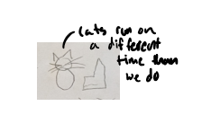
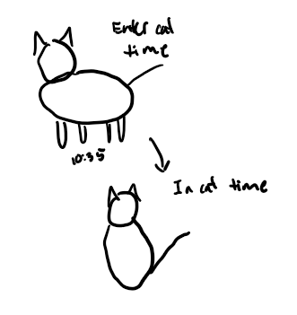
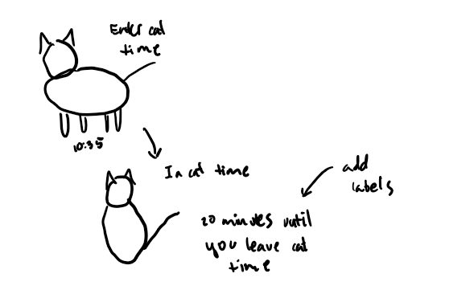
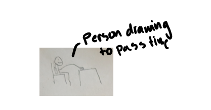
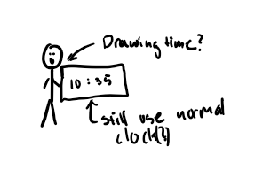
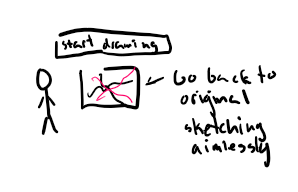
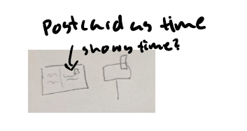
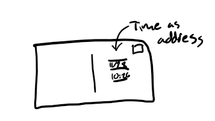
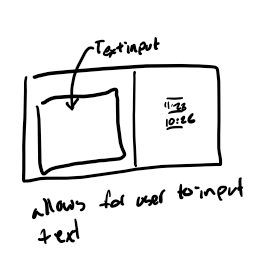

Cat Time
The sketch represents when a cat jumps on your lap and you are stuck there until the cat decides to leave.
- Context: This is for anyone who wants to be reminded to take a few minutes to slow down and pet a cat.
- Design decisions: I decided to add text saying when you would leave cat time after getting feedbacl that people would find it more useful to have an end point. I also made the button larger to make it more readable.
- Future work: Adding a pet the cat feature that makes it so cat time either ends abruptly, or increases by a random amount, to further immitate having a cat sitting on you.
Sketch evolution
Replace these images with your own sketch evolution images.



Time to Draw
The sketch represents the time in between events, when you could either just be aimless, or take a few minutes to sketch and recharge. This encourages people to spend otherwise lost time doing creative past times.
- Context: This is for anyone who wants to be reminded to pursue creativity whenever they can.
- Design decisions: I decided to keep the drawing timer to 5 minutes so that it would match the theme of having limited time but wanting to be creative.
- Future work: Adding a feature so that the user can change the amount of time to match their needs.
Sketch evolution
Replace these images with your own sketch evolution images.



Postcard Clock
The sketch represents how postcards capture a moment in time that the receiver is brought to when they read it.
- Context: This is in the context of being reminded of past events and times at the irregular interval that the mail works on.
- Design decisions: I decided to add a text input feature so that the user could write in a message. I also decided on showing the date to further match the theme of saving a moment in time.
- Future work: Adding a button that takes in the text input and formats it to the postcard. Then saves the postcard to remind the user of that time on a later date.
Sketch evolution
Replace these images with your own sketch evolution images.



Adapted from Golan Levin, 2016-2018